Shumoku UI kit
libs/@shumoku/renderer/src/kit/ の部品とトークンの一覧。図はエンジン（renderNetworkSvg）が出した SVG を svg/ から読んでいます。kit を直したら bun run catalog で作り直します。
Tokens
src/kit/tokens.ts。すべての長さは em（本文サイズ）と stroke（基本線幅）の比。値は既定の base（em 11, stroke 1）で解いた px。
| em | 11 |
|---|
| stroke | 1 |
|---|
| hair | 0.5 |
|---|---|
| thin | 1 |
| base | 1.5 |
| bold | 2 |
| heavy | 3 |
| nodeTitle.fontSize | 13.75 |
|---|---|
| nodeTitle.shift | 4.81 |
| nodeText.fontSize | 9.9 |
| nodeText.shift | 3.47 |
| badge.fontSize | 8.8 |
| badge.shift | 3.08 |
| portLabel.fontSize | 8.8 |
| portLabel.shift | 3.08 |
| groupLabel.fontSize | 11 |
| groupLabel.shift | 3.85 |
| linkCaption.fontSize | 9.9 |
| linkCaption.shift | 3.47 |
| hullLabel.fontSize | 8.8 |
| hullLabel.shift | 3.08 |
| ascii | 0.6 |
|---|---|
| wide | 1 |
| tracking | 0.05 |
|---|
| wash | 0.08 |
|---|---|
| line | 0.25 |
| shadow | 0.06 |
| width | 1 |
|---|---|
| opacity | 0.25 |
| factKey | 83.16 |
|---|---|
| factValue | 201.96 |
| subtitle | 225.72 |
| caption | 237.6 |
| margin | 44 |
|---|
| dy | 1 |
|---|---|
| blur | 1 |
| padding | 16.5 |
|---|---|
| iconSize | 27.5 |
| iconGap | 11 |
| rowHeight | 16.5 |
| sectionGap | 11 |
| minWidth | 77 |
| minHeight | 60.5 |
| badgeGap | 8.25 |
| badgeHeight | 16.5 |
| badgePadding | 5.5 |
| badgeRadius | 2.75 |
| factGap | 11 |
| cornerRadius | 8.25 |
| maxRows | 4 |
| assumedDash | 5.5, 2.75 |
| size | 8.25 |
|---|---|
| cornerRadius | 2.75 |
| minSlot | 38.5 |
| labelGap | 11 |
| labelHeight | 11 |
| labelPadding | 5.5 |
| labelCornerRadius | 2.75 |
| labelOffset | 13.75 |
| gap | 33 |
|---|---|
| memberGap | 22 |
| groupGap | 44 |
| apart | 11 |
| leadOut | 30.25 |
| lineHeight | 14.85 |
|---|---|
| paddingX | 8.25 |
| paddingY | 5.5 |
| cornerRadius | 5.5 |
| padding | 22 |
|---|---|
| labelBand | 27.5 |
| labelX | 11 |
| cornerRadius | 11 |
| dashed | 5.5, 2.75 |
|---|---|
| dotted | 0, 6.6 |
| pad | 11 |
|---|---|
| outerRadius | 22 |
| notchHeight | 33 |
| notchMin | 8.25 |
| filletRadius | 8.25 |
| labelX | 2.75 |
| labelY | 5.5 |
| width | 3 |
|---|---|
| marqueeWidth | 1 |
| marqueeOpacity | 0.08 |
Colors
src/kit/colors.ts（テーマから引く。テーマ本体は core の themes/）。
| light | dark | |
|---|---|---|
| background | #ffffff | #0f172a |
| card.fill | #f8fafc | #1e293b |
| card.stroke | #64748b | #94a3b8 |
| card.text | #0f172a | #f1f5f9 |
| card.textSecondary | #64748b | #94a3b8 |
| link | #64748b | #94a3b8 |
| surfaces.surface-1.fill | #f8fafc | #1e293b |
| surfaces.surface-1.stroke | #e2e8f0 | #475569 |
| surfaces.surface-1.text | #64748b | #94a3b8 |
| surfaces.surface-2.fill | #f1f5f9 | #334155 |
| surfaces.surface-2.stroke | #cbd5e1 | #64748b |
| surfaces.surface-2.text | #475569 | #cbd5e1 |
| surfaces.surface-3.fill | #e2e8f0 | #475569 |
| surfaces.surface-3.stroke | #94a3b8 | #94a3b8 |
| surfaces.surface-3.text | #334155 | #e2e8f0 |
| surfaces.accent-blue.fill | #eff6ff | #1e3a8a |
| surfaces.accent-blue.stroke | #bfdbfe | #3b82f6 |
| surfaces.accent-blue.text | #3b82f6 | #93c5fd |
| surfaces.accent-green.fill | #f0fdf4 | #064e3b |
| surfaces.accent-green.stroke | #bbf7d0 | #10b981 |
| surfaces.accent-green.text | #16a34a | #6ee7b7 |
| surfaces.accent-red.fill | #fff1f2 | #4c0519 |
| surfaces.accent-red.stroke | #fecdd3 | #f43f5e |
| surfaces.accent-red.text | #e11d48 | #fda4af |
| surfaces.accent-amber.fill | #fef3c7 | #78350f |
| surfaces.accent-amber.stroke | #fcd34d | #f59e0b |
| surfaces.accent-amber.text | #d97706 | #fcd34d |
| surfaces.accent-purple.fill | #faf5ff | #3b0764 |
| surfaces.accent-purple.stroke | #e9d5ff | #a855f7 |
| surfaces.accent-purple.text | #9333ea | #d8b4fe |
| group.fill | #f8fafc | #1e293b |
| group.stroke | #e2e8f0 | #475569 |
| group.text | #64748b | #94a3b8 |
| textSecondary | #64748b | #94a3b8 |
| port.fill | #334155 | #64748b |
| port.stroke | #0f172a | #94a3b8 |
| port.labelBackground | #0f172a | #0f172a |
| port.labelText | #ffffff | #ffffff |
| hull | #3c3c3c | #3c3c3c |
| shadow | #101828 | #101828 |
| lineTone.lightness | 0.6 | 0.75 |
| lineTone.chroma | 0.1 | 0.13 |
| lineTone.hue | 260 | 255 |
NodeCard: 機器の種類
DeviceType ごとのカードの形・アイコン。形は node-shape.ts、中身は content.ts / card-look.ts。
src/kit/NodeCard.svelte src/kit/card-look.ts src/kit/node-shape.ts src/kit/content.ts
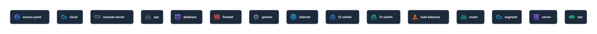
YAML
name: cards
nodes:
- { id: router, label: router, type: router }
- { id: l3-switch, label: l3-switch, type: l3-switch }
- { id: l2-switch, label: l2-switch, type: l2-switch }
- { id: firewall, label: firewall, type: firewall }
- { id: load-balancer, label: load-balancer, type: load-balancer }
- { id: server, label: server, type: server }
- { id: access-point, label: access-point, type: access-point }
- { id: cpe, label: cpe, type: cpe }
- { id: console-server, label: console-server, type: console-server }
- { id: cloud, label: cloud, type: cloud }
- { id: internet, label: internet, type: internet }
- { id: vpn, label: vpn, type: vpn }
- { id: database, label: database, type: database }
- { id: segment, label: segment, type: segment }
- { id: generic, label: generic, type: generic }
links: []
NodeCard: 状態とラベル
製品付き、日本語の長いラベル、assumed（未観測）のカード。
src/kit/NodeCard.svelte src/kit/card-look.ts src/kit/measure.ts
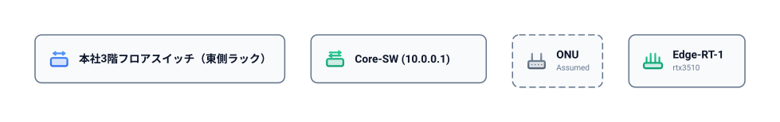
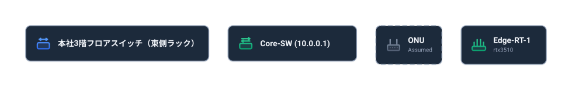
YAML
name: card-states
nodes:
- { id: rt, label: Edge-RT-1, type: router, product: yamaha/rtx3510 }
- { id: multi, label: 'Core-SW (10.0.0.1)', type: l3-switch }
- { id: jp, label: 本社3階フロアスイッチ（東側ラック）, type: l2-switch }
- { id: onu, label: ONU, type: cpe, assumed: true }
links: []
Wire / Port: 線の種類
速度で太さ（wire-width.ts）、virtual は点線、assumed は破線、VLAN で色（wire-look.ts）。両端の四角と名札が Port。
src/kit/Wire.svelte src/kit/wire-look.ts src/kit/wire-width.ts src/kit/Port.svelte src/kit/port-look.ts
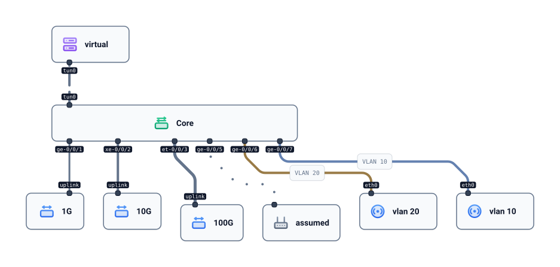
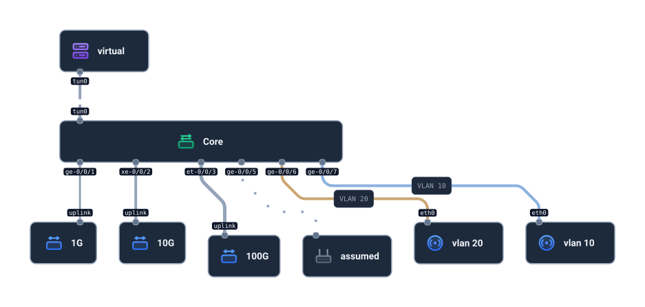
YAML
name: wires
segments:
- { id: users, vlan: 20 }
- { id: mgmt, vlan: 10 }
nodes:
- { id: core, label: Core, type: l3-switch }
- { id: a, label: 1G, type: l2-switch }
- { id: b, label: 10G, type: l2-switch }
- { id: c, label: 100G, type: l2-switch }
- { id: d, label: virtual, type: server }
- { id: e, label: assumed, type: cpe }
- { id: f, label: vlan 20, type: access-point }
- { id: g, label: vlan 10, type: access-point }
links:
- { endpoints: [{ node: core, port: ge-0/0/1 }, { node: a, port: uplink }], speed: 1G }
- { endpoints: [{ node: core, port: xe-0/0/2 }, { node: b, port: uplink }], speed: 10G }
- { endpoints: [{ node: core, port: et-0/0/3 }, { node: c, port: uplink }], speed: 100G }
- { endpoints: [{ node: core, port: tun0 }, { node: d, port: tun0 }], virtual: true }
- { endpoints: [{ node: core, port: ge-0/0/5 }, { node: e }], assumed: true }
- { endpoints: [{ node: core, port: ge-0/0/6 }, { node: f, port: eth0 }], segments: [users] }
- { endpoints: [{ node: core, port: ge-0/0/7 }, { node: g, port: eth0 }], segments: [mgmt] }
WireCaption: 線の名札
ケーブル種別・長さが線の中ほどに出る。caption-look.ts / content.ts の captionContent。
src/kit/WireCaption.svelte src/kit/caption-look.ts src/kit/content.ts
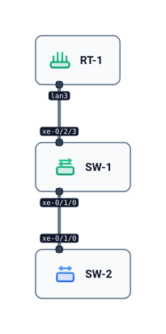
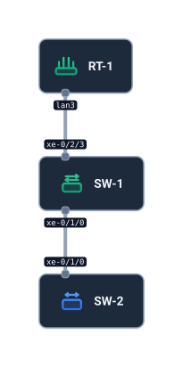
YAML
name: captions
nodes:
- { id: rt-1, label: RT-1, type: router }
- { id: sw-1, label: SW-1, type: l3-switch }
- { id: sw-2, label: SW-2, type: l2-switch }
links:
- { endpoints: [{ node: rt-1, port: lan3 }, { node: sw-1, port: xe-0/2/3 }], speed: 10G, cable: mmf-om4, length: 3m }
- { endpoints: [{ node: sw-1, port: xe-0/1/0 }, { node: sw-2, port: xe-0/1/0 }], speed: 10G, cable: dac, length: 1m }
GroupFrame / Hull: 枠と冗長ペア
入れ子のグループ枠（group-look.ts）と、冗長ペアを囲む Hull（hull-look.ts / hull-geometry.ts）。
src/kit/GroupFrame.svelte src/kit/group-look.ts src/kit/Hull.svelte src/kit/hull-look.ts src/kit/hull-geometry.ts
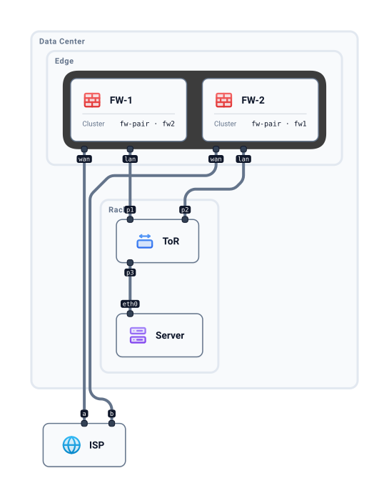
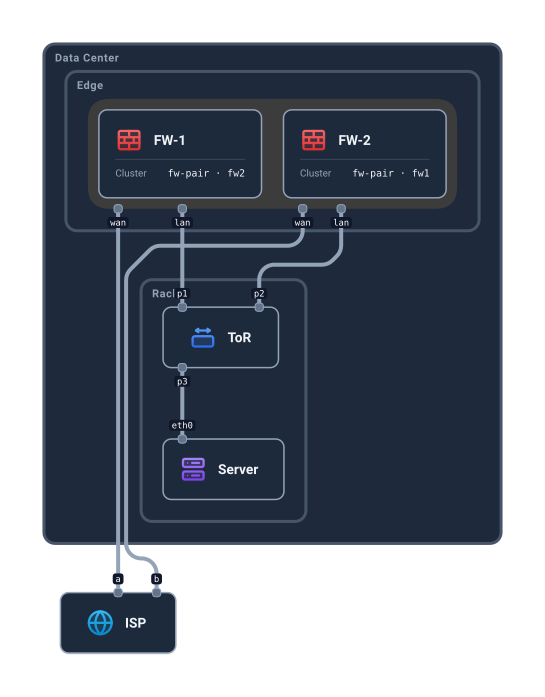
YAML
name: groups
groups:
- id: dc
label: Data Center
groups:
- { id: edge, label: Edge }
- { id: rack, label: Rack A }
redundancy:
- { id: fw-pair, nodes: [fw1, fw2] }
nodes:
- { id: isp, label: ISP, type: internet }
- { id: fw1, label: FW-1, type: firewall, group: edge }
- { id: fw2, label: FW-2, type: firewall, group: edge }
- { id: sw, label: ToR, type: l2-switch, group: rack }
- { id: srv, label: Server, type: server, group: rack }
links:
- { endpoints: [{ node: isp, port: a }, { node: fw1, port: wan }] }
- { endpoints: [{ node: isp, port: b }, { node: fw2, port: wan }] }
- { endpoints: [{ node: fw1, port: lan }, { node: sw, port: p1 }], speed: 10G }
- { endpoints: [{ node: fw2, port: lan }, { node: sw, port: p2 }], speed: 10G }
- { endpoints: [{ node: sw, port: p3 }, { node: srv, port: eth0 }] }
Fixtures
core/src/input/fixtures/pass/ の入力をそのまま描いたもの（30 件）。
address-network-unknown
The address is known but nobody knows which network it is on. (round 5: NAS)
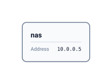
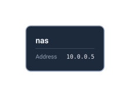
YAML
# The address is known but nobody knows which network it is on. (round 5: NAS)
nodes:
- { id: nas, address: 10.0.0.5 }
links: []
address-without-port
An address on a segment with no port of its own, like an SVI; no link into the segment is known.
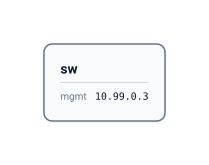
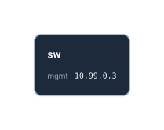
YAML
# An address on a segment with no port of its own, like an SVI; no link into the segment is known.
segments:
- { id: mgmt, vlan: 99, prefix: 10.99.0.0/24, addresses: { sw: 10.99.0.3 } }
nodes:
- { id: sw }
links: []
aggregate-addresses-unpaired
Two devices under one node; both names and both addresses are known, but not which goes with which, nor which cable lands on which device. (round 3: core stack)
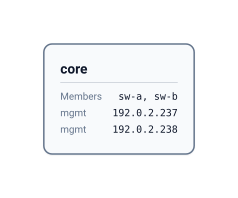
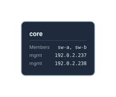
YAML
# Two devices under one node; both names and both addresses are known, but not which goes with
# which, nor which cable lands on which device. (round 3: core stack)
segments:
- id: mgmt
vlan: 103
addresses: { core: [192.0.2.237, 192.0.2.238] }
nodes:
- { id: core, members: [sw-a, sw-b] }
links: []
as-border
Another AS is reached only through its routers; a router whose name is not known is a node with no label, not an assumed one. The IX session crosses the shared LAN, so it is a virtual link. The AS64540 session's path is not known, so its link is neither virtual nor given a cable. Transit or peering is a contract, not configuration: it stays in description. (round 14-17)
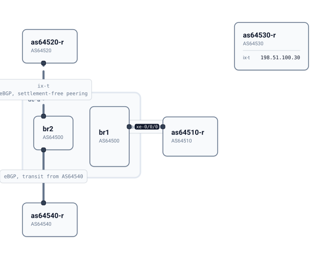
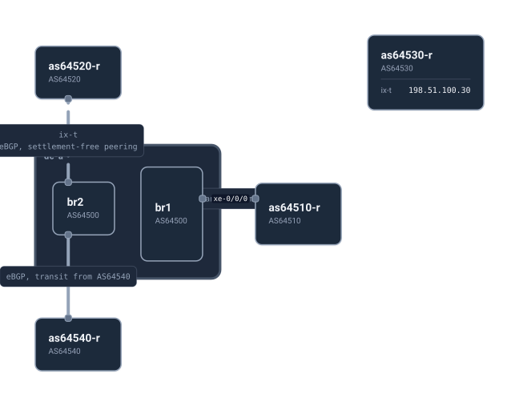
YAML
# Another AS is reached only through its routers; a router whose name is not known is a node with
# no label, not an assumed one. The IX session crosses the shared LAN, so it is a virtual link.
# The AS64540 session's path is not known, so its link is neither virtual nor given a cable.
# Transit or peering is a contract, not configuration: it stays in description. (round 14-17)
groups:
- { id: dc-a }
segments:
- id: ix-t
prefix: 198.51.100.0/24
addresses: { br2: 198.51.100.10, as64520-r: 198.51.100.20, as64530-r: 198.51.100.30 }
nodes:
- { id: br1, asn: 64500, group: dc-a }
- { id: br2, asn: 64500, group: dc-a }
- { id: as64510-r, asn: 64510 }
- { id: as64520-r, asn: 64520 }
- { id: as64530-r, asn: 64530 }
- { id: as64540-r, asn: 64540 }
links:
- endpoints: [{ node: br1, port: xe-0/0/0 }, { node: as64510-r }]
speed: 10G
description: eBGP, transit from AS64510
- endpoints: [{ node: br2 }, { node: as64520-r }]
segments: [ix-t]
virtual: true
description: eBGP, settlement-free peering
- endpoints: [{ node: br2 }, { node: as64540-r }]
description: eBGP, transit from AS64540
cable-types
Cables by type and length. (JANOG57 wrote lengths as link labels; NetBox's Cable has a type and a length with its unit. Light writers 6/6 used these fields.)
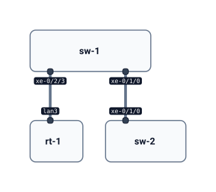
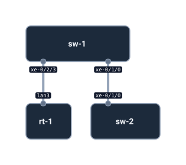
YAML
# Cables by type and length. (JANOG57 wrote lengths as link labels; NetBox's Cable has a type and
# a length with its unit. Light writers 6/6 used these fields.)
nodes:
- { id: rt-1 }
- { id: sw-1 }
- { id: sw-2 }
links:
- { endpoints: [{ node: rt-1, port: lan3 }, { node: sw-1, port: xe-0/2/3 }], speed: 10G, cable: mmf-om4, length: 3m }
- { endpoints: [{ node: sw-1, port: xe-0/1/0 }, { node: sw-2, port: xe-0/1/0 }], speed: 10G, cable: dac, length: 1m }
cloud-vpc
A VPC with two subnets in two availability zones, an internet gateway attached to the VPC as a whole, and a transit gateway attached through both subnets. (round 10 test 7: written as a routing domain, 8/8 writers kept subnet and gateway membership; as a VPC node, 0/7)
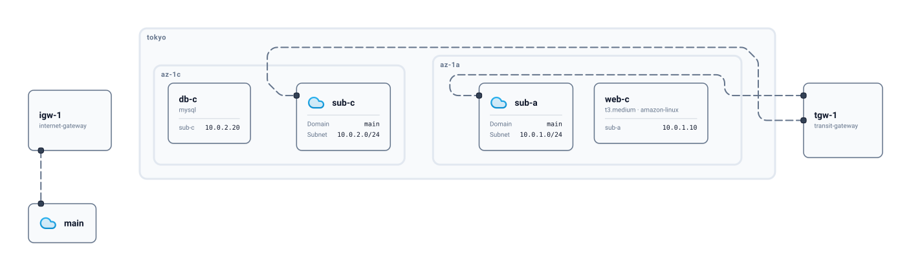
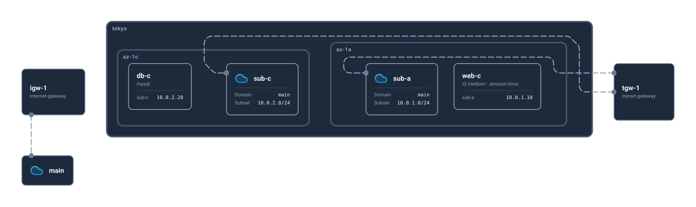
YAML
# A VPC with two subnets in two availability zones, an internet gateway attached to the VPC as a
# whole, and a transit gateway attached through both subnets. (round 10 test 7: written as a
# routing domain, 8/8 writers kept subnet and gateway membership; as a VPC node, 0/7)
groups:
- id: tokyo
groups:
- { id: az-1a }
- { id: az-1c }
routingDomains:
- { id: main, prefix: 10.0.0.0/16 }
segments:
- { id: sub-a, prefix: 10.0.1.0/24, routingDomain: main, group: az-1a, addresses: { web-c: 10.0.1.10 } }
- { id: sub-c, prefix: 10.0.2.0/24, routingDomain: main, group: az-1c, addresses: { db-c: 10.0.2.20 } }
nodes:
- { id: web-c, product: aws/ec2/t3.medium, software: amazon-linux }
- { id: db-c, product: aws/rds/mysql }
- { id: igw-1, product: aws/internet-gateway }
- { id: tgw-1, product: aws/transit-gateway }
links:
- { endpoints: [{ node: igw-1 }, { routingDomain: main }], virtual: true }
- { endpoints: [{ node: tgw-1 }, { segment: sub-a }], virtual: true }
- { endpoints: [{ node: tgw-1 }, { segment: sub-c }], virtual: true }
host-product-and-software
A server is a Dell R750 and runs ESXi: two facts, neither squeezes out the other. A VM has no product of its own, only the software it runs. (round 10 test 2: without `software`, 4/6 writers dropped ESXi)
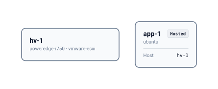
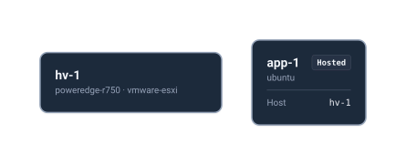
YAML
# A server is a Dell R750 and runs ESXi: two facts, neither squeezes out the other. A VM has no
# product of its own, only the software it runs. (round 10 test 2: without `software`, 4/6
# writers dropped ESXi)
nodes:
- { id: hv-1, product: dell/poweredge-r750, software: vmware-esxi }
- { id: app-1, software: ubuntu, host: hv-1 }
links: []
l3-adjacency-through-segment
The router is a next hop on VLAN 10, which physically runs inside the core somewhere unknown. Written as an unconfirmed link into the core carrying VLAN 10, not as a cable to the firewall.
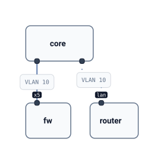
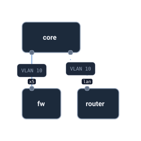
YAML
# The router is a next hop on VLAN 10, which physically runs inside the core somewhere unknown.
# Written as an unconfirmed link into the core carrying VLAN 10, not as a cable to the firewall.
segments:
- id: wan
vlan: 10
prefix: 203.0.113.0/24
addresses: { fw: 203.0.113.2/24, router: 203.0.113.1/24 }
nodes:
- { id: fw }
- { id: core }
- { id: router }
links:
- endpoints: [{ node: core }, { node: fw, port: x5 }]
segments: [wan]
- endpoints: [{ node: router, port: lan }, { node: core }]
segments: [wan]
assumed: true
link-carries-nothing
An empty list says the link carries no segment, which is not the same as leaving it out. (review)
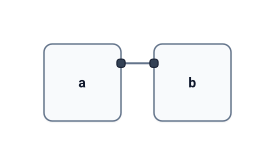
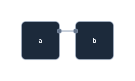
YAML
# An empty list says the link carries no segment, which is not the same as leaving it out. (review)
nodes: [{ id: a }, { id: b }]
links:
- { endpoints: [{ node: a }, { node: b }], segments: [] }
link-unconfirmed-ports-unknown
Believed connected, not confirmed, and nobody knows the ports. (round 3: uplinkAssumed)
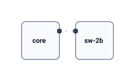
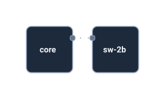
YAML
# Believed connected, not confirmed, and nobody knows the ports. (round 3: uplinkAssumed)
nodes:
- { id: core }
- { id: sw-2b }
links:
- endpoints: [{ node: core }, { node: sw-2b }]
assumed: true
link-virtual
Not a cable: a VPN tunnel over the internet. (examples: "IPsec VPN" links drawn dashed)
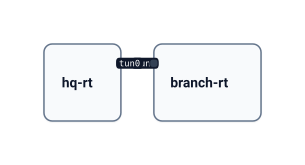
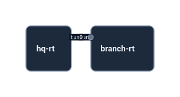
YAML
# Not a cable: a VPN tunnel over the internet. (examples: "IPsec VPN" links drawn dashed)
nodes:
- { id: hq-rt }
- { id: branch-rt }
links:
- endpoints: [{ node: hq-rt, port: tun0 }, { node: branch-rt, port: tun0 }]
virtual: true
link-vlans-unchecked
The cable exists; which VLANs it carries has not been checked. Write no segments. Leaving segments out means unknown; a written list is complete (round 7).
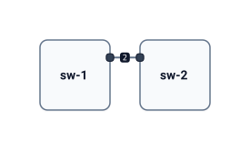
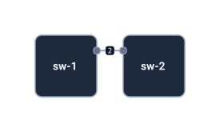
YAML
# The cable exists; which VLANs it carries has not been checked. Write no segments.
# Leaving segments out means unknown; a written list is complete (round 7).
segments:
- { id: staff, vlan: 10 }
nodes:
- { id: sw-1 }
- { id: sw-2 }
links:
- endpoints: [{ node: sw-1, port: "2" }, { node: sw-2 }]
name-unknown
The host name is unknown; leave label out rather than filling it with the vendor. (round 3: "Acme")
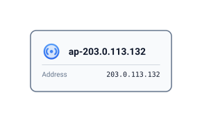
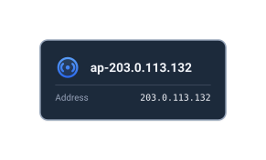
YAML
# The host name is unknown; leave label out rather than filling it with the vendor. (round 3: "Acme")
nodes:
- { id: ap-203.0.113.132, type: access-point, product: acme, address: 203.0.113.132 }
links: []
node-unconfirmed
Expected to exist but never observed. (round 3: ONU absent from traceroute)
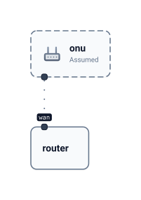
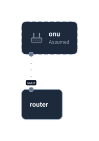
YAML
# Expected to exist but never observed. (round 3: ONU absent from traceroute)
nodes:
- { id: router }
- { id: onu, type: cpe, assumed: true }
links:
- endpoints: [{ node: router, port: wan }, { node: onu }]
assumed: true
parallel-tunnels
One site-to-site VPN made of two IPsec tunnels between the same two nodes. (round 11: with a connection list, 6/6 light writers wrote two links and none invented a VPN node; without, 3/6)
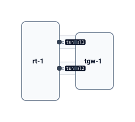
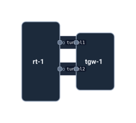
YAML
# One site-to-site VPN made of two IPsec tunnels between the same two nodes. (round 11: with a
# connection list, 6/6 light writers wrote two links and none invented a VPN node; without, 3/6)
connections:
- { id: vpn-1, label: Site-to-Site VPN }
nodes:
- { id: rt-1 }
- { id: tgw-1 }
links:
- { endpoints: [{ node: rt-1, port: tunnel1 }, { node: tgw-1 }], virtual: true, connection: vpn-1 }
- { endpoints: [{ node: rt-1, port: tunnel2 }, { node: tgw-1 }], virtual: true, connection: vpn-1 }
places-nested
Venue, then floor, written one inside the other. A node may also have no place when the source does not say.
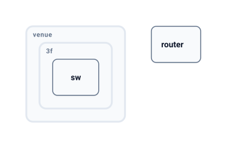
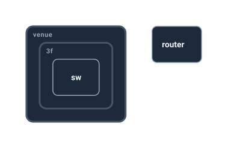
YAML
# Venue, then floor, written one inside the other. A node may also have no place when the
# source does not say.
groups:
- id: venue
groups:
- { id: 3f }
nodes:
- { id: sw, group: 3f }
- { id: router }
links: []
product-maker-unknown
A monitoring system records a model name but not its maker. (resolved real graphs: 165 of 2804 nodes; with no way to say it, light writers put the model where the maker goes 5/6)
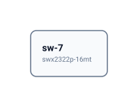
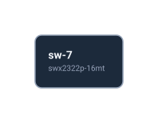
YAML
# A monitoring system records a model name but not its maker. (resolved real graphs: 165 of 2804
# nodes; with no way to say it, light writers put the model where the maker goes 5/6)
nodes:
- { id: sw-7, product: ?/swx2322p-16mt }
links: []
rate-contracted
A carrier circuit handed off as 1G Ethernet with a 300M contract, and a cloud circuit whose only known rate is its 2G bandwidth. A rate is any number with M, G or T, so a circuit or a non-Ethernet line is written as it is. (round 23: with the IEEE rates only, 2/6 writers put 1G on the 2G circuit and 2/6 dropped it.)
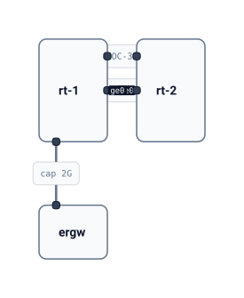
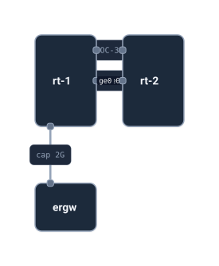
YAML
# A carrier circuit handed off as 1G Ethernet with a 300M contract, and a cloud circuit whose
# only known rate is its 2G bandwidth. A rate is any number with M, G or T, so a circuit or a
# non-Ethernet line is written as it is. (round 23: with the IEEE rates only, 2/6 writers put
# 1G on the 2G circuit and 2/6 dropped it.)
nodes:
- { id: rt-1 }
- { id: rt-2 }
- { id: ergw }
links:
- { endpoints: [{ node: rt-1, port: ge0 }, { node: rt-2, port: ge0 }], speed: 1G, bandwidth: 300M }
- { endpoints: [{ node: rt-1 }, { node: ergw }], bandwidth: 2G }
- { endpoints: [{ node: rt-1 }, { node: rt-2 }], speed: 155M, description: OC-3 }
redundancy-claimed-not-confirmed
The operator's table says HA pair (.101 active, .102 standby); live data shows standalone. Something answers at .102, so it exists; the pairing is what is unconfirmed. (round 3: firewall)
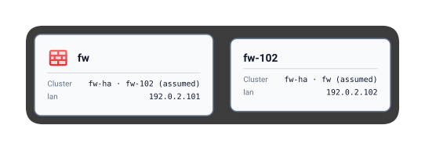
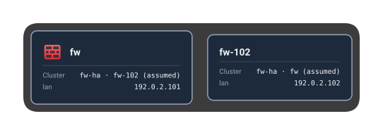
YAML
# The operator's table says HA pair (.101 active, .102 standby); live data shows standalone.
# Something answers at .102, so it exists; the pairing is what is unconfirmed. (round 3: firewall)
segments:
- id: lan
vlan: 103
addresses: { fw: 192.0.2.101, fw-102: 192.0.2.102 }
redundancy:
- { id: fw-ha, nodes: [fw, fw-102], assumed: true }
nodes:
- { id: fw, type: firewall }
- { id: fw-102 }
links: []
redundancy-pair-with-interconnect
Two routers back each other up and are cabled directly. The cable needs no mark: it joins two members of one set. (examples: `redundancy: ha` on the interconnect)
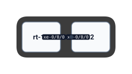
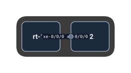
YAML
# Two routers back each other up and are cabled directly. The cable needs no mark: it joins
# two members of one set. (examples: `redundancy: ha` on the interconnect)
redundancy:
- { id: core-pair, nodes: [rt-1, rt-2] }
nodes:
- { id: rt-1 }
- { id: rt-2 }
links:
- endpoints: [{ node: rt-1, port: xe-0/0/0 }, { node: rt-2, port: xe-0/0/0 }]
redundancy-virtual-address-no-interconnect
A VRRP pair sharing a virtual address, with no known cable between the two.
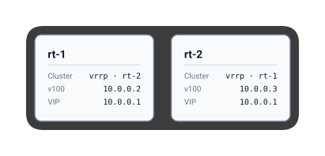
YAML
# A VRRP pair sharing a virtual address, with no known cable between the two.
segments:
- id: v100
vlan: 100
addresses: { vrrp: 10.0.0.1, rt-1: 10.0.0.2, rt-2: 10.0.0.3 }
redundancy:
- { id: vrrp, nodes: [rt-1, rt-2] }
nodes:
- { id: rt-1 }
- { id: rt-2 }
links: []
segment-dual-stack
An IX peering LAN has an IPv4 and an IPv6 prefix; the border router reaches it over a provider's line and switch, so each link of the way carries it. (round 18, ShowNet 2025 JPIX, public)
YAML
# An IX peering LAN has an IPv4 and an IPv6 prefix; the border router reaches it over a provider's
# line and switch, so each link of the way carries it. (round 18, ShowNet 2025 JPIX, public)
segments:
- id: jpix
prefix: [210.171.224.0/23, '2001:de8:8::/64']
addresses: { mx204: [210.171.224.9, '2001:de8:8::20:82:1'] }
nodes:
- { id: mx204, asn: 290 }
- { id: kddi-cpe }
- { id: ncs5501se.kote }
links:
- { endpoints: [{ node: mx204, port: 0-0-0 }, { node: kddi-cpe }], segments: [jpix] }
- { endpoints: [{ node: kddi-cpe }, { node: ncs5501se.kote, port: 0-0-1-3 }], segments: [jpix] }
- { endpoints: [{ node: ncs5501se.kote, port: 0-0-1-1 }, { segment: jpix }] }
segment-member-address-unknown
A VM's adapter is in the port group for VLAN 30, but its address there is not written down. (round 11: a link to the segment was written 6/6 by light writers for a gateway attached through subnets, against 2/6 for a node-side list; an empty address list read as "present" 3/6)
YAML
# A VM's adapter is in the port group for VLAN 30, but its address there is not written down.
# (round 11: a link to the segment was written 6/6 by light writers for a gateway attached through
# subnets, against 2/6 for a node-side list; an empty address list read as "present" 3/6)
segments:
- { id: database, vlan: 30 }
nodes:
- { id: db-1 }
links:
- { endpoints: [{ node: db-1 }, { segment: database }], virtual: true }
shownet-external
ShowNet 2025 external connectivity, from its public topology map and PeeringDB; which router holds each IX address is read from the map, as the operator would know it. (round 21)
YAML
# ShowNet 2025 external connectivity, from its public topology map and PeeringDB; which router
# holds each IX address is read from the map, as the operator would know it. (round 21)
name: ShowNet 2025 external
description: >-
AS290's internet-facing part. AS290 peers over JPIX with 34 ASes, over JPNAP with 34 and over
BBIX Tokyo with 34, and with the route servers of JPNAP, BBIX Tokyo and DIX-IE.
segments:
- id: jpix
label: JPIX
prefix: [210.171.224.0/23, '2001:de8:8::/64']
addresses: { mx204: [210.171.224.9, '2001:de8:8::20:82:1'] }
- id: dix-ie
label: DIX-IE
prefix: [202.249.2.0/24, '2001:200:0:fe00::/64']
addresses: { mx204: [202.249.2.199, '2001:200:0:fe00::122:1'] }
- id: jpnap
label: JPNAP
prefix: [210.173.176.0/23, '2001:7fa:7:1::/64']
addresses: { ncs57c3: [210.173.176.9, '2001:7fa:7:1::290:1'] }
- id: bbix-tokyo
label: BBIX Tokyo
prefix: [101.203.88.0/22, '2001:de8:c::/64']
addresses: { cisco8712: [101.203.88.109, '2001:de8:c::290:1'] }
- { id: bbix-singapore, label: BBIX Singapore }
- { id: bbix-hong-kong, label: BBIX Hong Kong }
- { id: jcix, label: JCIX }
- { id: enternet-ix, label: ENTERNET IX }
- { id: ipa, label: IPA }
nodes:
- { id: mx204, asn: 290 }
- { id: ncs57c3, asn: 290 }
- { id: cisco8712, asn: 290 }
- { id: kddi-cpe }
- { id: ncs5501se.kote, description: at the far end of a KDDI line }
- { id: kddi-transit, description: KDDI Internet Gateway; transit from KDDI }
- { id: apn-cpe }
- { id: ocn-transit, description: OCN; transit }
- { id: wxd, type: optical }
- { id: wxt-1, type: optical }
- { id: softbank-cpe }
- { id: smartinternet-transit, description: SmartInternet; transit from SoftBank }
- { id: ucxg-cpe }
links:
- { endpoints: [{ node: mx204, port: 0-0-0 }, { node: kddi-cpe }], segments: [jpix, dix-ie] }
- { endpoints: [{ node: kddi-cpe }, { node: ncs5501se.kote, port: 0-0-1-3 }], segments: [jpix, dix-ie] }
- { endpoints: [{ node: ncs5501se.kote, port: 0-0-1-0 }, { node: kddi-transit }] }
- { endpoints: [{ node: ncs5501se.kote, port: 0-0-1-1 }, { segment: jpix }] }
- { endpoints: [{ node: ncs5501se.kote, port: 0-0-1-2 }, { segment: dix-ie }] }
- { endpoints: [{ node: ncs57c3, port: 0-0-0-24 }, { node: apn-cpe }] }
- { endpoints: [{ node: apn-cpe }, { node: ocn-transit }] }
- { endpoints: [{ node: ncs57c3 }, { node: wxd }] }
- { endpoints: [{ node: ncs57c3 }, { node: wxt-1 }] }
- { endpoints: [{ node: ncs57c3 }, { segment: jpnap }], description: over IOWN Open APN; which wavelength is not known }
- { endpoints: [{ node: cisco8712, port: 0-2-0-0 }, { node: softbank-cpe }], segments: [bbix-tokyo, bbix-singapore, bbix-hong-kong] }
- { endpoints: [{ node: softbank-cpe }, { node: smartinternet-transit }] }
- { endpoints: [{ node: softbank-cpe }, { segment: bbix-tokyo }] }
- { endpoints: [{ node: softbank-cpe }, { segment: bbix-singapore }] }
- { endpoints: [{ node: softbank-cpe }, { segment: bbix-hong-kong }] }
- { endpoints: [{ node: cisco8712, port: 0-1-0-0 }, { node: ucxg-cpe }], segments: [jcix, enternet-ix, ipa] }
- { endpoints: [{ node: cisco8712, port: 0-1-0-1 }, { node: ucxg-cpe }], segments: [jcix, enternet-ix, ipa] }
- { endpoints: [{ node: ucxg-cpe }, { segment: jcix }] }
- { endpoints: [{ node: ucxg-cpe }, { segment: enternet-ix }] }
- { endpoints: [{ node: ucxg-cpe }, { segment: ipa }] }
trunk-address-per-vlan
One cable carries two VLANs, and the firewall has a different address on each. (round 3: x5.10 / x5.100)
YAML
# One cable carries two VLANs, and the firewall has a different address on each. (round 3: x5.10 / x5.100)
segments:
- { id: lan, vlan: 103, addresses: { fw: 192.0.2.254/24 } }
- { id: wan, vlan: 10, prefix: 203.0.113.0/24, addresses: { fw: 203.0.113.2/24 } }
nodes:
- { id: fw }
- { id: core }
links:
- endpoints: [{ node: core }, { node: fw, port: x5 }]
segments: [lan, wan]
two-addresses-one-segment
A management address and an interface address on the same segment. (round 3: .101 and .254)
YAML
# A management address and an interface address on the same segment. (round 3: .101 and .254)
segments:
- id: lan
vlan: 103
prefix: 192.0.2.0/24
addresses: { fw: [192.0.2.101, 192.0.2.254/24] }
nodes:
- { id: fw }
links: []
vm-on-cluster-host-unknown
A VM runs somewhere in an HA cluster; which host right now is not known. (round 9; NetBox lets a VM name only its cluster)
YAML
# A VM runs somewhere in an HA cluster; which host right now is not known. (round 9; NetBox lets
# a VM name only its cluster)
redundancy:
- { id: prod, nodes: [esx-1, esx-2, esx-3] }
nodes:
- { id: esx-1 }
- { id: esx-2 }
- { id: esx-3 }
- { id: db-1, host: prod }
links: []
vm-on-known-host
A VM runs on a known host, and its adapter is in the host's port group for VLAN 10. (round 9: vSphere connects a VM's adapter to a port group; NetBox gives a VM interface VLANs and addresses but no cable)
YAML
# A VM runs on a known host, and its adapter is in the host's port group for VLAN 10.
# (round 9: vSphere connects a VM's adapter to a port group; NetBox gives a VM interface VLANs
# and addresses but no cable)
segments:
- { id: staff, vlan: 10, addresses: { web-1: 192.168.1.20 } }
nodes:
- { id: esx-1 }
- { id: web-1, host: esx-1 }
links: []
vrf
A router keeps a guest VRF beside its main table; VLAN 20 belongs to it. The router is in both through its segments. (round 10 test 7)
YAML
# A router keeps a guest VRF beside its main table; VLAN 20 belongs to it. The router is in both
# through its segments. (round 10 test 7)
routingDomains:
- { id: guest }
segments:
- { id: vlan20, vlan: 20, prefix: 192.168.20.0/24, routingDomain: guest, addresses: { ap-1: 192.168.20.5 } }
nodes:
- { id: rt-1, product: yamaha/rtx3510 }
- { id: ap-1 }
links:
- { endpoints: [{ node: rt-1, port: lan2 }, { node: ap-1 }], segments: [vlan20] }